On how CTNT 2020 came to be, our experience putting it together, a description of its structure, results of a survey completed by participants, and a discussion of what we think went well and what did not work.
Here is a summary of the sections below, for easy navigation to skip to the sections you might be most interested in:
- TL;DR: My Personal Summary: this is a blog after all, so here is my personal take on CTNT 2020.
- A Bit of CTNT History: some remarks on how CTNT first came to be.
- Here Comes Covid-19 to Ruin Everything: how the pandemic ruined our plans for an in-person event.
- What IF? What If CTNT Went Online? The organizers weigh the pros and cons of putting CTNT together online.
- We Stand on the Shoulders of the Community: acknowledgements of those who put together online events before us and shared their experiences and suggestions with the community.
- Online Organizing Begins: About Participants and Speakers: the first steps, contacting participants and speakers.
- Technology for Lectures: our decisions on how to setup the lecture room.
- Additional Technology for the Summer School: the setup during the summer school portion of CTNT.
- Additional Technology for the Conference: the setup for the conference beyond the lecture room.
- Schedule: some remarks about the summer school and conference schedule
- So, How Did It Go?? Part 1: Deliverables. A list of objective products created by CTNT collaborators.
- How Did It Go, Part 2: The Summer School. A discussion on what worked and what didn’t during the summer school.
- How Did It Go, Part 3: The Conference. What worked and what didn’t during the conference.
TL;DR: My Personal Summary
Let me start by thanking my co-organizers and all the CTNT lecturers for the huge amount of time and effort that they have generously donated to make CTNT 2020 happen. THANK YOU.
When we started planning CTNT online, my worst fear was the following thought: “What if CTNT online is such a success, that we never ever again get funding for an in-person event?” Luckily, my impression is that CTNT 2020 has been a very successful online event, but some of the crucial social aspects of the face-to-face summer school and conference are, in my opinion, irreplaceable, and no matter how hard we try, we will not be able to reproduce the connections and camaraderie generated by spending a week together during a summer school and conference.
The mathematical content produced by the summer school and conference is excellent. However, we the organizers failed to manufacture effective social opportunities, as much as we tried. Rather, attendants chose not to engage in the opportunities we did provide, which I assume is due to the fact that these opportunities were not appealing enough to engage in such social engineering.
On a personal level, it suffices to say that I have lost 3 pounds in two weeks. It has been extremely stressful and hectic. I was so busy with technical aspects of the summer school and conference that I was barely able to listen to any of the talks (thankfully, we have videos!). Needless to say, all of this effort would not have been possible if my kids were any younger and my wife was not available to take on all childcare for the week (all the tasks that we usually share). So, THANK YOU, Marisa.
I do believe that all our efforts have paid off, I am very happy we were able to make it happen, and would do it again if need be. Let us all HOPE that there is no need to make it happen online again, but if it must we have this experience to fall back on.
However, some benefits of the online format are undeniable. Our content has reached many more students and faculty than ever before (we had people joining us for the conference from North America, South America, Hawaii, Asia, Africa, Europe, Australia, New Zealand…). Thus, we will consider adjusting future in-person CTNT conferences to have a larger online presence as well.
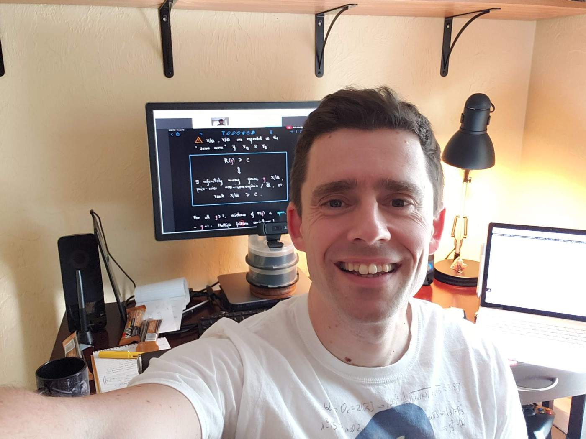
A Bit of CTNT History
CTNT, the Connecticut Summer School and Conference in Number Theory (more info at ctnt.math.uconn.edu), is a summer school in number theory for advanced undergraduate and beginning graduate students, followed by a research conference. The program’s goal is twofold: (a) expose undergraduate and graduate students to important ideas in number theory, and (b) help students join a network of student peers and faculty interested in the same area of mathematics. The research conference following the school is open to participants of all levels, including senior and junior faculty, and interested students. In particular, summer school students’ participation in the research conference allows them hear about recent developments in the areas of arithmetic geometry and number theory.
The CTNT program started to take shape in 2014, when Keith Conrad and I organized a one-day conference called “Elliptic Curves @ UConn 2014,” which was meant as a test to see what kind of interest there was for an instructional event in number theory in the Northeast. About 60 students joined us for the day, which made it clear to us that there was enough interest to try to put together a larger, more ambitious event, similar in spirit to the very successful Arizona Winter School, but aimed at an audience of students beginning in number theory (the AWS is aimed at advanced graduate students, instead).
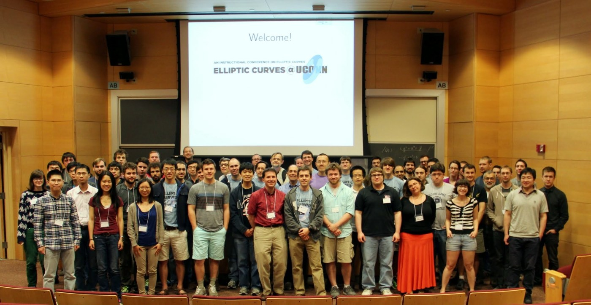
Encouraged by the success of the 2014 event, we (Keith Conrad, Amanda Folsom, Liang Xiao, and I) applied for NSF+NSA funding to put together an week long event, which became the very first edition of CTNT in 2016. And then two years later, Jennifer Balakrishnan, Keith Conrad, Liang Xiao, and I, put together CTNT 2018 with NSA+NSF+Number Theory Foundation funding, together with UConn funding. It is a huge amount of work to put these events together (in person), so our plan was to put together one of these events every other year, in even years but…
Here Comes Covid-19 to Ruin Everything
In the Fall of 2019, Jennifer Balakrishnan, Keith Conrad, Christelle Vincent, and I joined forces to apply for funding to put together CTNT at UConn for June 2020. We received funding from the NSA, the NSF, and the Journal of Number Theory, and we started the preparations for CTNT 2020: fix dates, invite summer school lecturers, guest speakers, and conference plenary speakers, reserve dorm space, create and mail a poster, announce the event, set up and collect registration entries for the summer school and conference, etc.
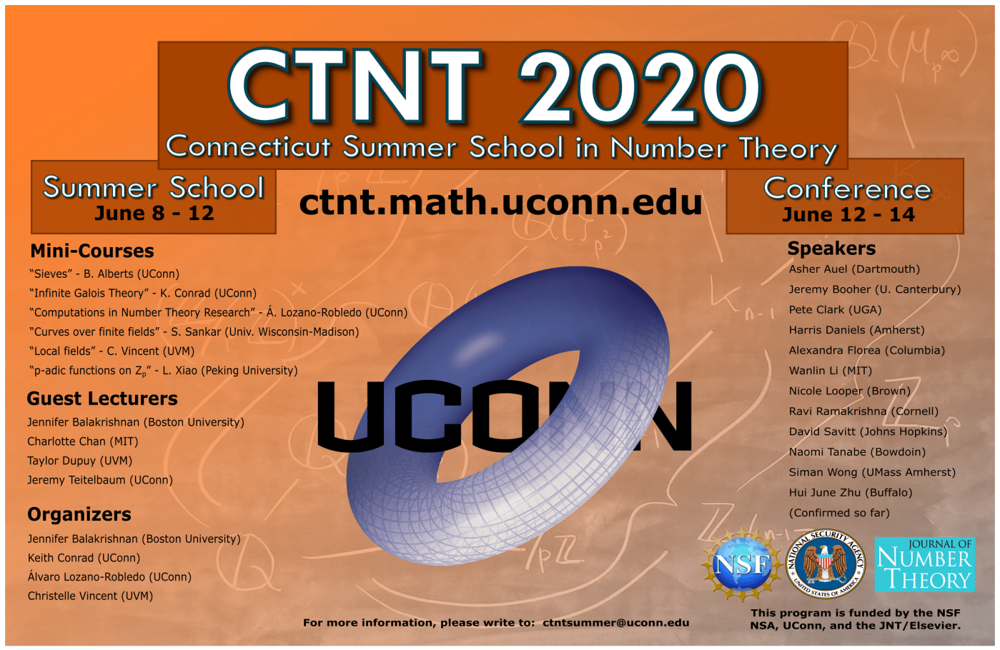
By early March, however, Covid-19 was a very serious concern (see the Pandemic Logbook entry of this blog), and on March 27th we decided to cancel the in-person CTNT 2020 program that we had already worked hard to put together. (A month later UConn announced that all overnight summer programs on campus in 2020 would be canceled, so if we had not already decided to cancel our in-person event then the decision would have been made for us in late April.)
What IF? What If CTNT Went Online?
Once it was clear we would have to cancel the CTNT in-person event, the organizers started discussing whether an online event was possible. Our conversations were fueled by seminars and conferences, such as AGONIZE, and the meteoric popularity of mathseminars.org, now researchseminars.org, which exemplified the need and desire for online math content during social isolation.
It was clear that students would appreciate the opportunity of an online program, but could we actually pull it off? Many hurdles became immediately apparent:
- We had to “reinvent” CTNT in late March, for an event to be held in early June.
- A majority of organizers have young children at home, some very young, and no childcare. For those who have kids of school age, we are basically homeschooling our kids. Are we going to have time to organize a CTNT that may be potentially larger than a face-to-face format?
- We might have to find a new line-up of summer school instructors and conference speakers from scratch, as we cannot assume that everyone who already agreed to speak will be able to contribute a mini-course or conference lecture online (e.g., many of the speakers are probably in a similar situation at home without child care).
- The technological hurdles seem daunting, particularly for a summer school.
- How many students can we accept into an online summer school and still be able to interact with all of them? How big can the conference be?
- What happens to our funding for 2020?
- Are people going to be able to concentrate on math and/or organizing knowing that thousands of people are dying as a consequence of the pandemic?
However, there are some strong arguments in favor of moving forward with CTNT:
- Many REU programs and undergraduate programs have been cancelled (e.g., PCMI 2020, though other programs would later come back online, like ours). Undergrads are under the impression that a summer research experience (or similar summer math programs, such as CTNT) is crucial to their success applying to grad school, so those who were hoping that CTNT would be something they could mention in their grad school applications are worried about this opportunity disappearing.
- One goal of CTNT is to facilitate (undergrad and grad) students to network with their peers that are also interested in number theory. In a time of social isolation, it seemed even more important to put together a program that allowed students to meet others.
- Another goal of CTNT, in particular a goal of the conference, is to promote research by graduate students and postdocs, by featuring their talks next to lectures by junior and senior faculty. Since we all anticipate that the job market will be particularly tough, it seemed rather important to promote young mathematicians, perhaps more than ever before.
- Overall, it seemed imperative to add mathematical resources and opportunities under these circumstances. We did not want to “give up” on 2020.
- A relatively minor point: we love our event, and we love interacting with the students, and then with our colleagues that join us for the conference, to tell us about their latest research.
- Math content might actually give people an opportunity to stop thinking for a while about the pandemic.
After weighing the pros and cons, we decided to move forward with an online program, during the same dates as the original face-to-face event.
We Stand on the Shoulders of the Community
Thankfully, we were not going totally blind into organizing an entirely online mathematical event. Others had already done it before us, and then written extremely useful documentation about it. In particular, Daniel Litt has written about AGONIZE and about WAGON. In addition, Andrew Sutherland and Bianca Viray put together a very useful panel discussion on online conference organizing. We are indebted to all of them for the very useful ideas we got from from the panelists and the write-up about their event afterwards. Note, however, that we did not have a point of reference for an online summer school.
Online Organizing Begins: About Participants and Speakers
The first step in organizing CTNT was to gauge interest in an online summer school. We had 80 applicants that we were going to admit, so we sent a survey to see how many of them would be interested in an online program instead. Only 2 people declined our offer, and 78 students were admitted into the online CTNT. So, clearly, there was an overwhelming positive response.
Next, we contacted the original line-up of summer school instructors: one instructor informed us with regret that it would be impossible to put together a course during isolation and without childcare for a young kid (completely understandable!). The other 5 instructors tentatively agreed to teaching mini-courses, but they had to do a lot of research about delivery methods.
Then, we contacted the plenary speakers for the conference. Almost everyone was either interested to hear more about what we had in mind, or they tentatively accepted the invitation, until they had a better chance of experimenting with online teaching/lecturing technology. A few speakers declined our offer, understandably, due to the overwhelming circumstances, lack of childcare, due to their areas being particularly hard hit by Covid-19 deaths, or all of the above.
We created a new registration survey for the online conference, and we requested contributed talks.We received many more (great!) talk requests than we could possibly accommodate in a three-day conference. We selected 11 contributed talks and all others who submitted talk proposals were given the opportunity to submit a pre-recorded 20 minute talk that that would be featured on the conference website. Four people took us up on the opportunity to submit videos, and those are listed at the conference website and are part of the YouTube playlist of conference videos.
Once we had converged on a new line up of mini-courses and speakers, we altered the poster to create a new poster for the online, one-of-a-kind (hopefully) CTNT 2020 Online!
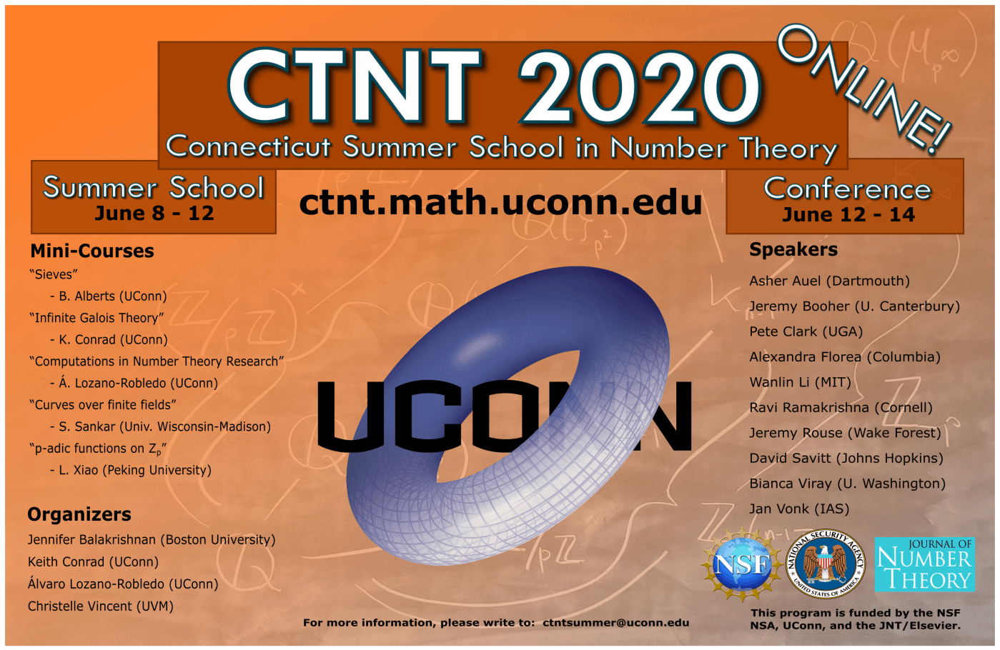
We asked all participants for the conference to register using a brief survey, so that we could gather some data about who would be coming to the event, so that we could communicate with all participants quickly by email if needed, but also as a measure to protect our event from trolls.
Technology for Lectures
One of the most difficult challenges in organizing CTNT 2020 online, and one that we debated the most, was the technological framework for the summer school and conference. The first and most crucial decision was picking a platform for the lectures. We decided on WebEx for several reasons:
- UConn’s IT department recommended using WebEx. When I asked why UConn didn’t have a Zoom license, their response was: “The cost is more than Webex and the features aren’t that much better and when it comes to security, Webex is much better than Zoom. I think people are comfortable with it because they did a good job marketing to everyone during this time and have gotten into their personal lives. Therefore they think it will work well in their professional life as well. But that is not always the case.”
- Indeed, when we looked into this, we found that there are people that have serious concerns about the security of Zoom (see, for example, this Forbes article, and this Guardian article where security experts opine that “Zoom is malware“).
- We had a Zoom license available to us through BU, but that meant our colleagues at BU would be burdened with the tech infrastructure, and I preferred to take on that part of the work myself. Alternatively, we could have purchased a Zoom webinar license for UConn, but that would mean taking funds away from CTNT 2021 that would otherwise be used for student support. And anyway, the security issues of Zoom were enough to look for alternatives.
- We do not like the way Zoom handles breakout rooms (either randomized or a huge hassle for the host), so we were going to need a different technology for breakout rooms anyway.
- 3 of the 5 mini-course instructors had used WebEx this past spring for teaching at UConn, making them quite familiar with many features of WebEx and confident they could help the other mini-course instructors and conference lecturers get comfortable with it.
Once we had settled on WebEx, we had the option of running regular online meetings where every participant except the host and presenter are on equal footing, or run a Webinar-style meeting, where the host has tighter control over who can participate at any given time. Since we did not know how large the meeting would be, we decided early on to do a Webinar-style where the host would be able to manage audio and video to maximize bandwidth and lecture quality. Thus, the setup for lectures was as follows:
- The conference organizers were “panelists” as well as the lecturer. The panelists always have access to use the microphone and to share a screen (e.g., lecture slides), and can send chat messages to any attendees.
- The rest of the audience were “attendees,” who had access to listen to and watch the video and shared content by the presenter and panelists, chat privately with panelists, and ask questions for the presenter in the Q&A box.
- If an attendee “raised their hand” (virtually), this signaled the host to give mic permissions to the attendee to ask a question out loud (when at an appropriate time during the talk to interrupt the lecture). The majority of questions (as many or more than in an in-person conference, I would say) came in text form in the Q&A to be read out by the host.
- All lectures were recorded. The Q&A sessions after each talk were not recorded, so that people could ask freely without the anxiety of being on the record with a “dumb question” (no such thing as a dumb question!). We often encouraged people to ask questions, during talks and after talks.
- All chatter and remarks were encouraged, but not on WebEx, where it would be distracting to those paying attention to the talks.
Additional Technology for the Summer School
Of course, we wanted the Summer School part of the event to be as interactive as possible. We wanted to maximize interactions with the instructors, and interactions among the students. How does one do that? We eventually decided on a combination of platforms to achieve our goals:
- WebEx: already described above, this is where we held all our summer school mini-courses.
- Piazza, the educational-oriented Q&A platform. The CTNT page on Piazza served several roles: first, we stopped sending emails to all 70+ students, and all announcements before the CTNT summer school were posted on Piazza. We also posted all sorts of resources (such as links to meetings, or rough lecture notes) that were not ready to be posted on the public site. Once the summer school started, this platform was where students could ask questions to the instructors, and the instructors (and others) could post and collaborate on answers.
- Blackboard Collaborate Ultra (BCU) rooms: BCU is a real-time video conferencing tool, which is browser based, so users do not have to create an account or install any additional apps. The great advantage of this software is that we could create rooms that the students could join by themselves, and share content with each other without the need of a host. We created a number of these rooms, for example one for each mini-course, so that the students could discuss the lectures with the instructors, and also meet in the rooms on their own to work together on exercises.
- Zulip streams. At the first two CTNT summer schools, students organically organized themselves and created text-based channels of communication (on WhatsApp or GroupMe), so we figured that we should get ahead of this, and create one unified text-based method of communication. We decided on Zulip (recommended during this panel) because it is open-source, handles LaTeX well, etc. Zulip was used for more informal chatting and texting, and also for announcements and to ask questions to speakers and organizers.
Additional Technology for the Conference
In addition to a lecture room, we wanted to provide spaces where participants could interact socially, and also spaces where students, postdocs, and faculty could interact mathematically. We decided on two additional platforms for the conference. (Conference participants did not have access to Piazza.)
- Blackboard Collaborate Ultra (BCU) rooms: we created three rooms that were open 8AM-11PM, and anyone could join at any time. The themes were: (1) Meet the speaker, discuss talks, (2) General/Coffee Break, (3) Ask questions, talk math. After each talk, the host asked the speaker where and when the participants could find them in one of these rooms, and in general the speaker joined the BCU room for talks during the break that followed their talk. The organizers also encouraged participants to gather in the General BCU room before the conference started, or during lunch breaks.
- Zulip streams (text-based communication). We invited all registered conference participants to join the CTNT Zulip streams. We made all the previous streams that we used during the summer school private (for privacy and also to avoid clutter), and created new streams to discuss talks, and chat in general.
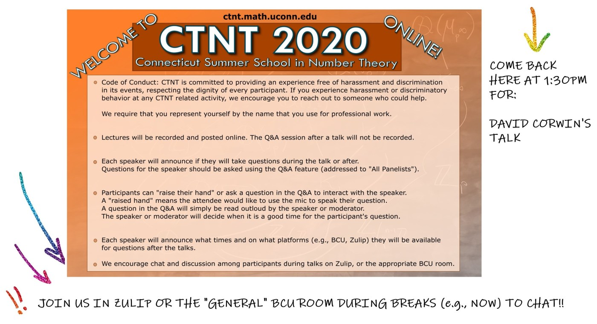
Schedule
The CTNT Summer School took place Monday-Thursday, and the schedule was as follows.
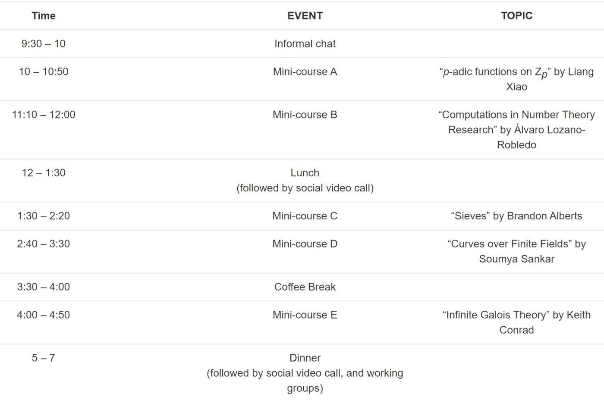
We had students connecting from the US Pacific time zone to the Eastern time zone, but we also had a lecturer connecting from China (a 12 hour time difference with US-Eastern). We decided in the end to start lectures at 10am (7am Pacific), which meant that some of the students would miss the morning lectures, and hopefully they could catch the videos later in the day. (Yes, the morning lectures were available in video by the early evening.) Instructors were available either during lunch or after dinner, in their BCU rooms and/or Zulip, to answer students’ questions.
For the conference, we settled on the following schedule.
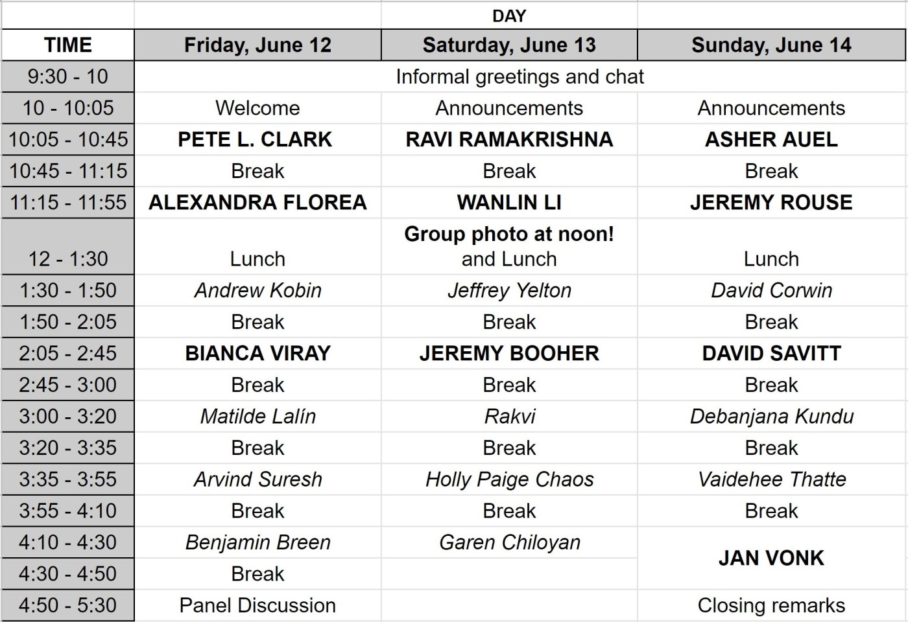
Before our conference, we debated whether we should move the conference to be within M-F, or keep it to the weekend, and in the end we decided to do a full day on Friday (usually we do a half-day on Friday during an in-person CTNT) and two full days during the weekend, hoping that some people could find time on a weekday or a weekend to participate in the conference.
So, How Did it Go?? Part 1: Deliverables
We think it went very well, overall! Let’s talk objectively first, and then we can talk about subjective experiences.
First, we describe the outcomes of everyone’s efforts, that is, the CTNT by-products:
- Five mini-courses in number theory, with a total of 4+4+5+5+7 = 25 lectures, which are available in YouTube playlists.
- Resources for the mini-courses (references, course notes, slides, exercises), which are available on our CTNT website.
- Twenty five conference videos (21 live lectures and 4 pre-recorded talks), which are available in a YouTube playlist.
- Materials that accompany the talks (abstracts, slides), which can be found on the conference website.
The quality of the conference talks was excellent. Some of the slides were works of art:
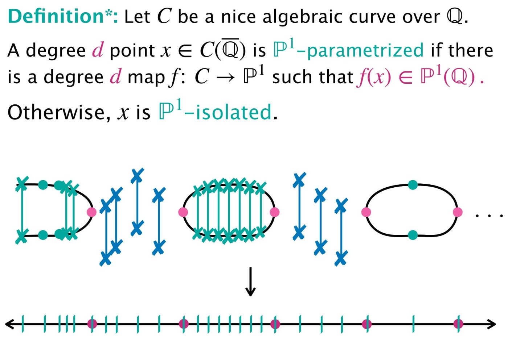
In terms of numbers, there were:
- 78 students (undergrad to grad) registered for the summer school. At any given time, there were about 50-60 students attending a lecture.
- 4 organizers, 2 of which were summer school lecturers.
- 3 additional summer school lecturers.
- 25 conference speakers (11 plenary, 10 contributed talks, 4 recorded talks)
- 253 additional people registered for the online conference
for a total of 363 people. See here and here for the group photos of the summer school and conference, respectively.
How Did It Go, Part 2: The Summer School
As mentioned above, the goals of the CTNT Summer School component were (1) to introduce students to topics in number theory of current interest and/or basic tools, (2) create a network of peers, and (3) introduce students to postdocs and faculty, and their research. How did we do? First, some anecdotal evidence:
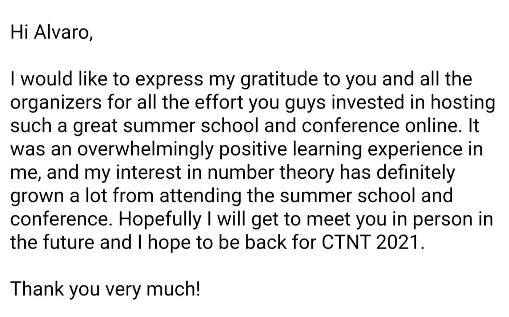
Next, a quick poll in between lectures, during the last day of the Summer School (Thursday). The question read “What’s your overall experience in the Summer School so far?”:
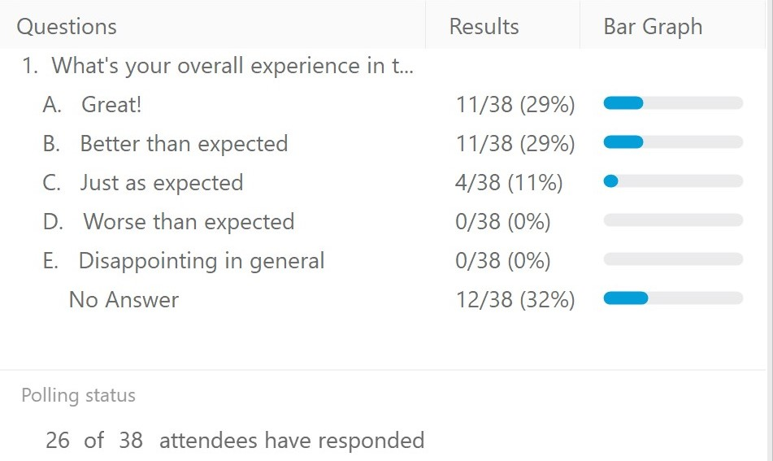
and some more feedback from a post-survey:
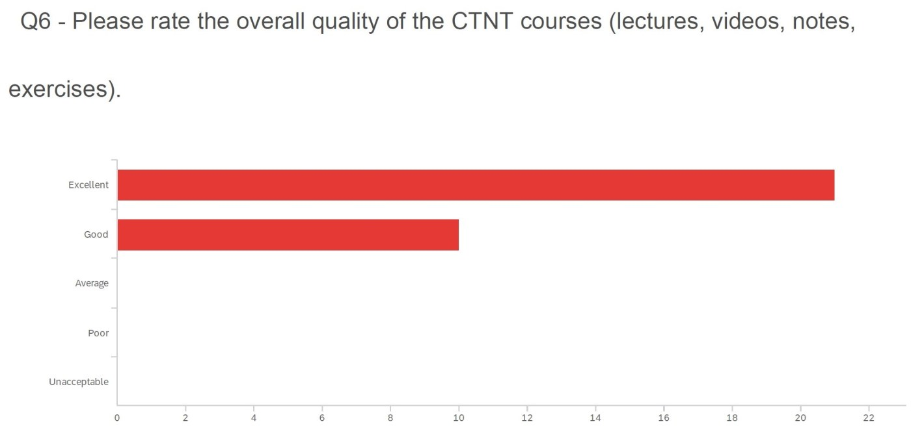
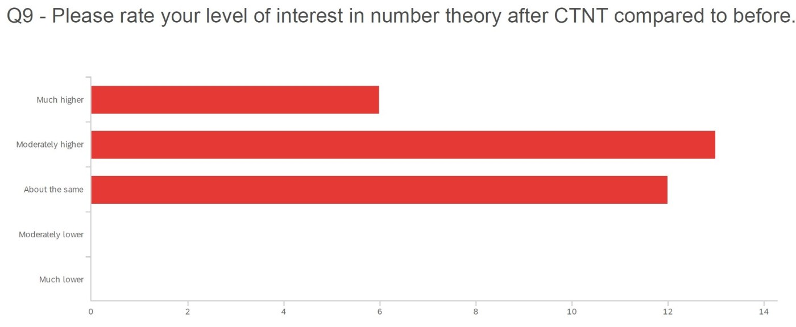
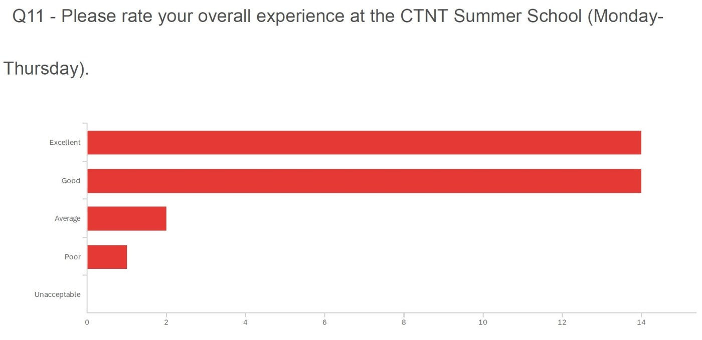
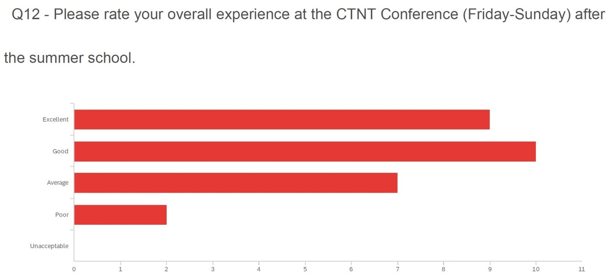
I think the content we offered was great, and the surveys indicate the students agree. However, we were able to recreate the social interactions and networking among students that we foster during an in-person summer school. To be honest, I do not think one can come close to recreating such opportunities in an online event. When the event is at UConn, the students stay in a dorm, they share double rooms, have meals together, play sports together, go to restaurants, etc.
That said, we failed when we created too many different online platforms where the students could interact. In our thought process, we believed that different students would prefer to communicate with us and others in different ways, but in offering more opportunities, we also diluted the audience. Here are some comments by students:
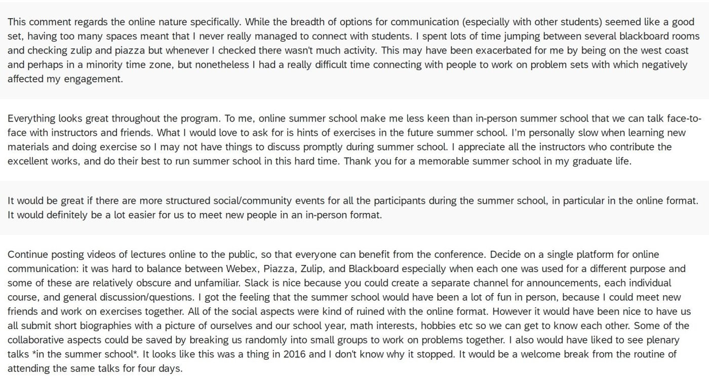
One thing that seemed to work well, and that we wish we had done more of (in retrospect) was a “number theory scavenger hunt” which we had during an introductory meeting that took place one week before the summer school started. We created random teams of students, and each team had to find the answers to three number theory/algebra questions, together. The students had to connect as teams in Zulip, then work together to find answers, and finally submit their responses to the organizers. This simple game created more opportunities to meet some of their peers than many other more structured class-related activities during the summer school.
How Did It Go, Part 3: The Conference
Let me begin with a couple of unsolicited email messages from mathematicians that I do not know on a personal level:
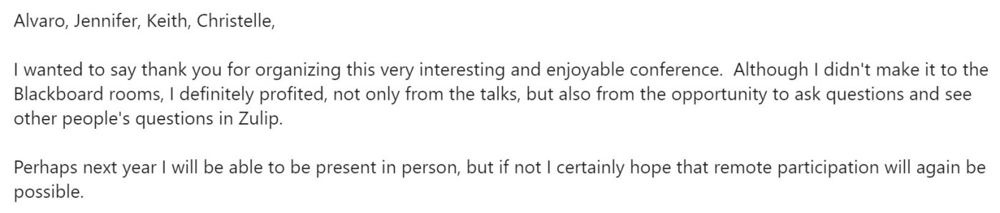
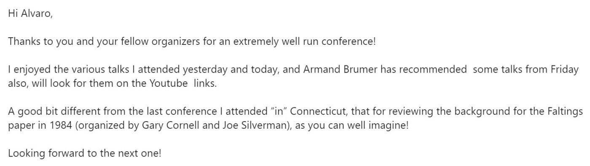
and some graphs:
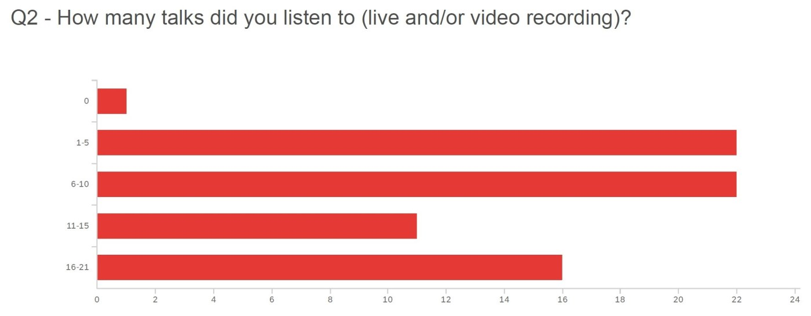
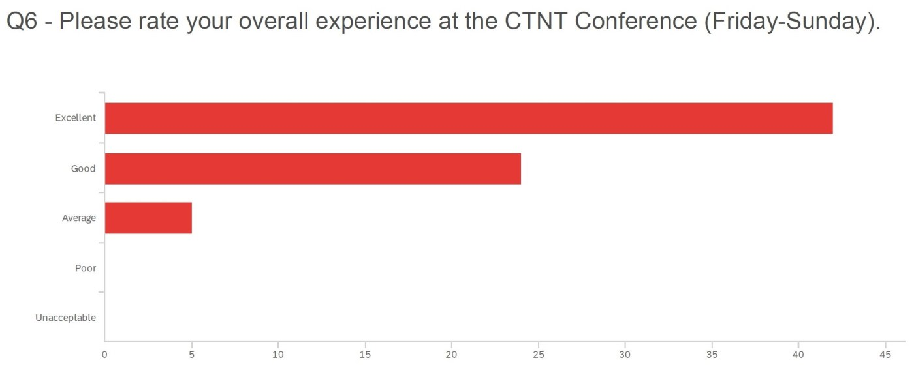
and then some written comments:
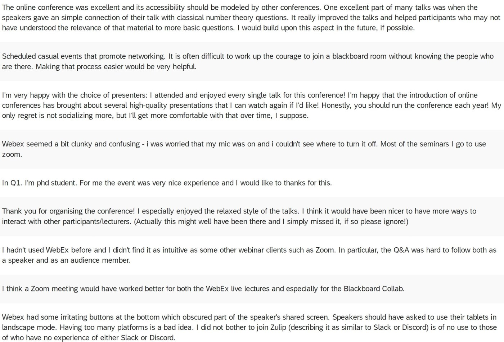
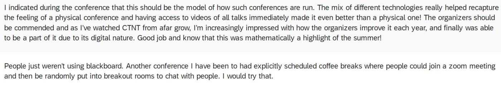
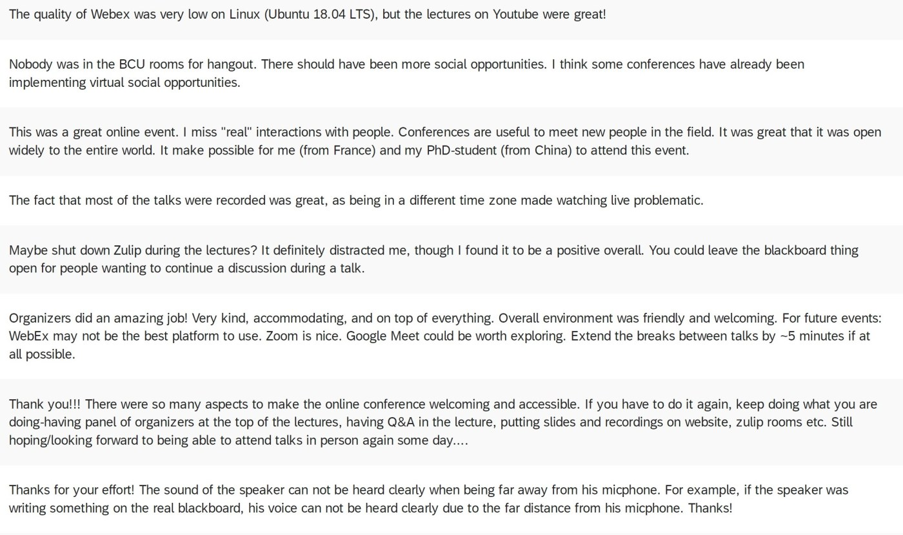
Most critical comments are about WebEx (see my comments here about WebEx vs Zoom) and about our poor attempts to encourage socialization. Admittedly, the Blackboard rooms we created, and where we encouraged people to gather, did not work well. There were only a few people at a time (between 5 and 10), at best, but they were empty most of the time. A few of the organizers disliked the idea of forcing/sending attendees into random rooms, so we preferred to create rooms where people could voluntarily gather… but it seems most people will not naturally go into such rooms, unless virtually prompted to do so.
One aspect that seemed to work remarkably well was the Zulip stream for each talk, and the general stream for announcements and other comments. There are pages and pages of comments on CTNT 2020 talks in Zulip, including many encouraging comments for speakers, new ideas to explore, references to follow-up on, etc.
Alright, I think this is quite enough for the moment! Please feel free to contact me if you have any other comments or questions. Thanks!